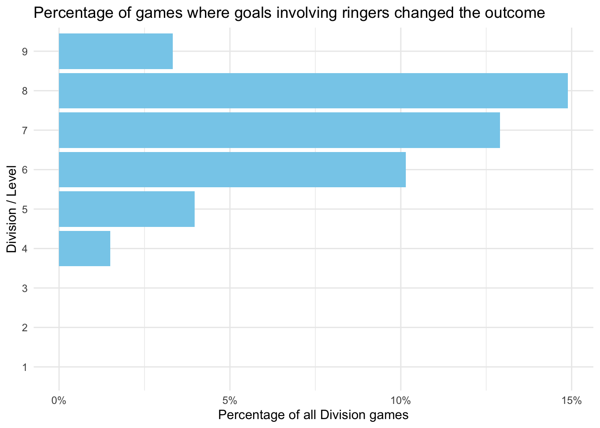
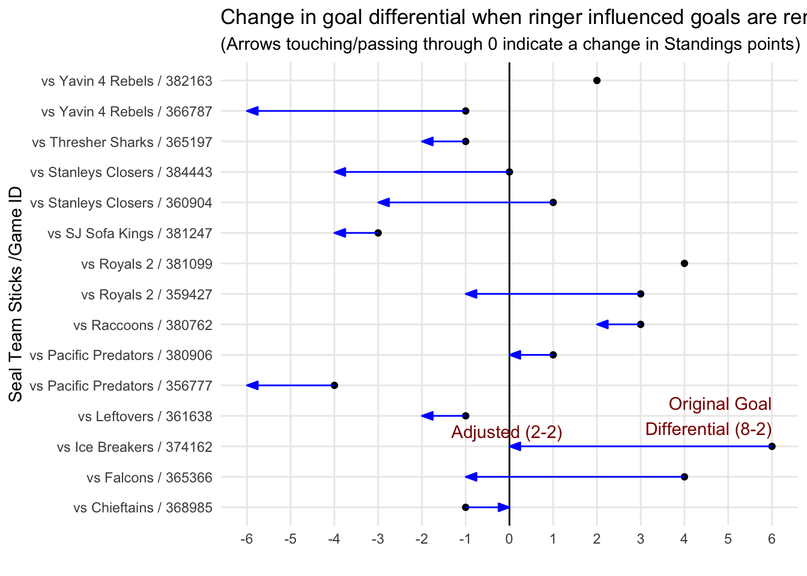
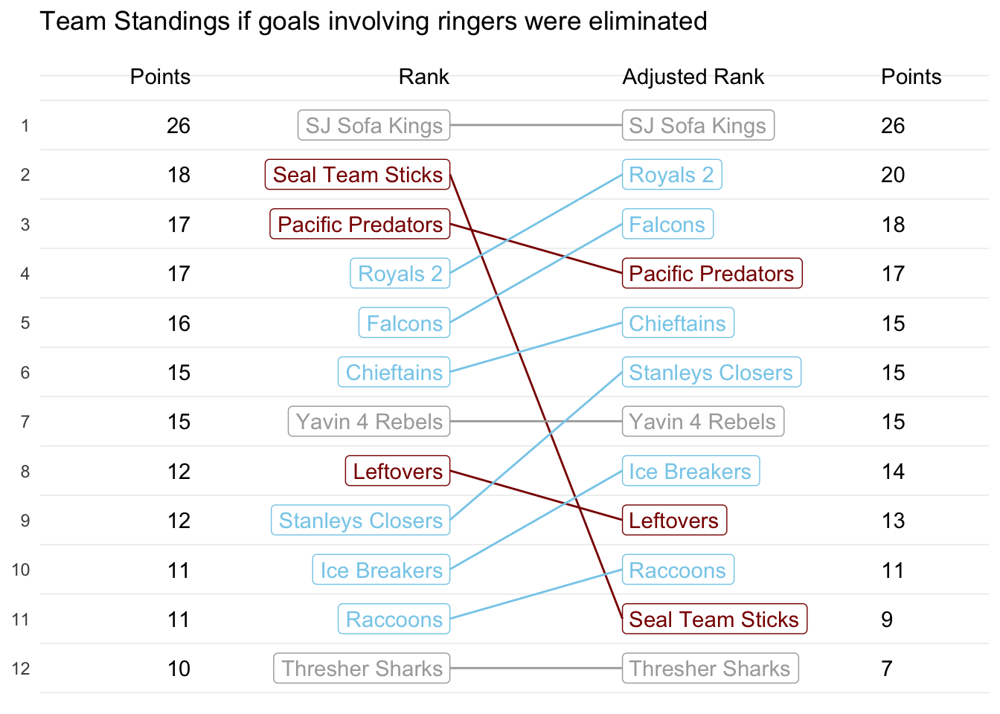

SIAHL Ringers are Spoiling the Lower Leagues
An open letter to Sharks Ice Adult Hockey League Management
The Sharks Ice Adult Hockey League is unquestionably an impressive organization with nearly 2000 active adult players and well over 100 teams. Games are well run, and players at all levels can find a league that suits their level of intensity and ability. The league is also impressively open with the game statistics which make it fun to track individual and team statistics within and across seasons. A fact we’ll take advantage of for this analysis.
As a long time Sharks Ice player, I’ve watch the league (and it’s predecessors) grow over the past 30+ years. As the level of play improves, age catches up with my own skills and I’ve had to drop levels over time in order to remain competitive. Unfortunately, its impossible to miss the fact the lower skilled divisions have a severe and increasing problem with ringers, that is, players whose skill level far exceeds the level they are playing in. As in all recreational sports, there are some atheletes that prefer to compete below their abilty, reasons can vary, and in some cases the decision may be justified, but its important to recognize the impact this has on the lower leagues and individual players in them who are wanting to develop their own skills and engage in fair competition.
Why does this matter? Because most of us who enjoy sports, hold the integrity of the match in high regard, and expect the rules, referees and organizers to facilitate a fair match to the best extent possible. It’s important for the health of the league as well, since fair play makes for a better experience for new comers, ensuring a healthy and growing increase in players. By allowing ringers to upset the natural competitive balance with a division, the league risks choking off an important source of future revenue by discouraging newcomers.
Is the ringer effect real? We can take a look at the public data available at https://stats.sharksice.timetoscore.com/ which shows that effect of ringers not only has significant impact, but that impact increases drastically in the lower level of play, precisely those who are …
The remainder of this article explains the methodology behind this conclusion and dives deeper into some of the more egregious offending teams. We also suggest a simple remedy to help curtail the unsportsmanlike practice of enlisting ringers to influence team’s game and league rankings.
Let’s start with some simple facts about about the league. This data represents the most recent complete season of Winter 2023.
| Total number of games played across all divisions | 1202 |
| Number of Divisions | 16 |
| Number of Teams | 136 |
| Number of Players | 1882 |
| Number of Players who participate on multiple teams | 943 |
| Number of Players who play up or down more than 2 division levels (i.e. Ringers) | 127 |
Let’s break that down a bit further by looking at Division/Levels. For clarity, a Division/Level looks only at the division number, for example 7A and 7B designate 2 separate divisions, but the same Division/Level. There are 9 Division/Levels overall, and we count a ringer as any player who has played a game at least 3 Division/Levels below their highest level. The Ringer/Game Count sums the number of games each ringer has played as a ringer.
| DivLevel | Player Count | Ringer Count | Ringer/Game Count |
|---|---|---|---|
| 1 | 96 | 0 | 0 |
| 2 | 71 | 0 | 0 |
| 3 | 282 | 0 | 0 |
| 4 | 471 | 8 | 35 |
| 5 | 483 | 10 | 26 |
| 6 | 724 | 31 | 120 |
| 7 | 972 | 68 | 226 |
| 8 | 573 | 75 | 238 |
| 9 | 119 | 13 | 27 |
There’s a weak correlation (-0.035) between the Ringer/Game Count and the team rankings at the end of the season, which would initially imply that the ringers don’t have a major impact on the season outcomes, but a more thorough look tells a different story.
One way to attempt to quantify a ringer impact at the game level, is to look at scoring that involves ringers. That is, if a ringer scores or assists a goal in a game, we can remove that point from the score and compare the adjusted score to the actual final score to see if affects the outcome. To illustrate, let’s look at this Division 8A game between the Ice Monkeys and the Irish Car Bombs 4 . The final score was 7-3 in favor of the Irish giving them a decided 2 pts towards their #1 rank for the final season.
# A tibble: 10 × 7
Period Time Goal Assist1 Assist2 Team Ringer
<chr> <chr> <chr> <chr> <chr> <chr> <chr>
1 1 10:36 5 "88" "" Irish Car Bombs 4 NO
2 1 8:09 66 "17" "4" Irish Car Bombs 4 NO
3 1 2:56 58 "11" "66" Irish Car Bombs 4 NO
4 2 19:27 06 "77" "23" Irish Car Bombs 4 YES
5 2 11:55 06 "23" "" Irish Car Bombs 4 YES
6 2 6:31 83 "06" "" Irish Car Bombs 4 YES
7 3 11:14 06 "" "" Irish Car Bombs 4 YES
8 2 7:47 40 "19" "39" Ice Monkeys NO
9 3 19:06 40 "19" "" Ice Monkeys NO
10 3 9:20 86 "" "" Ice Monkeys NO When we filter for ringers we see that each team has a few:
Irish Car Bombs 4 : 06, , Kyle H Skjerven, Kyle Skjerven
Ice Monkeys : character(0), character(0), character(0), character(0)

